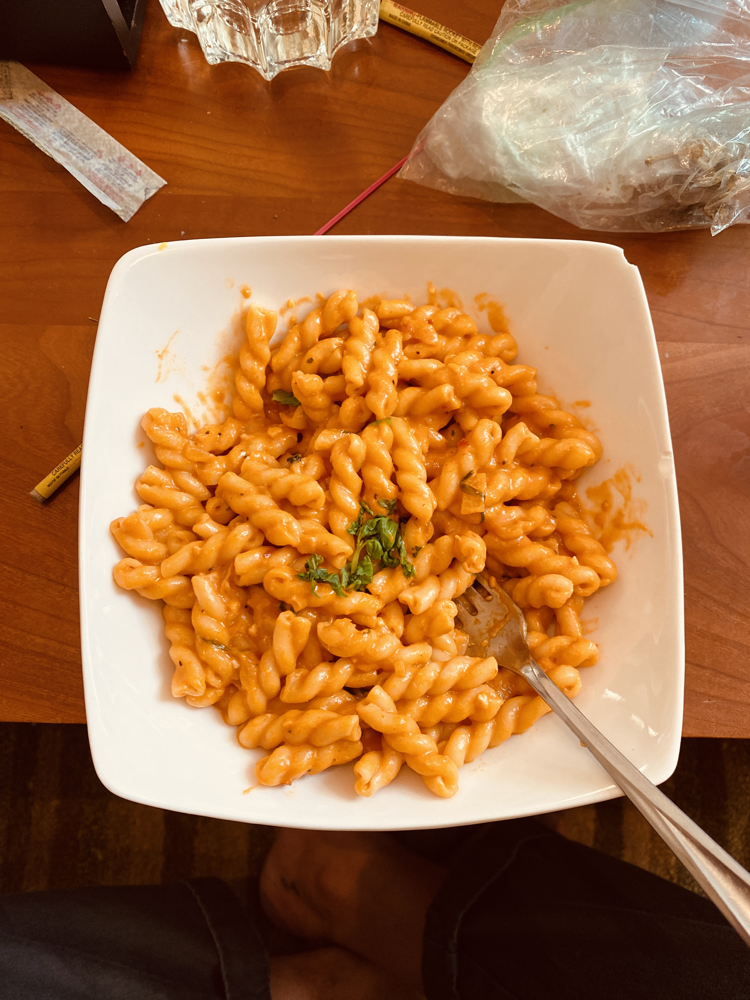
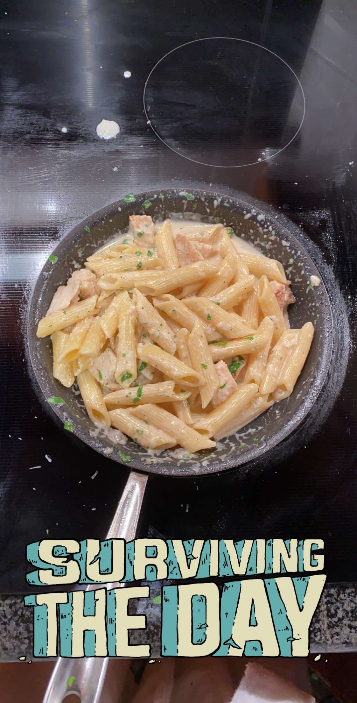

Pasta is one of the simplest yet most delicious foods you could make. Pasta is one of my ultimate comfort foods. It is a cuisine that can impress even the pickiest of eaters. However, whether it’s fresh pasta or straight from the box it doesn’t matter… The most important part of it is how you make the sauce.
Rigatoni alla Spicy Vodka Sauce

This dish is one of my all time favorites. I have used this to impress many people. It is creamy, flavorful, and has a bit of a kick. Make this for your family, your significant other, your significant other's parents, whoever, it is guaranteed to impress.
Ingredients
Salt & Pepper
Pasta of your choice | Chef reccomends: Rigatoni or Penne
Red pepper flakes
Olive Oil
Fresh Basil
White onions or shallots if you want it sweeter
2 cloves of garlic
1 can tomato paste
1-2 shots of vodka | Chef reccomends: Grey Goose
Heavy cream
Parmigiano reggiano
Butter
Directions
Boil your water and add a generous amount of salt to the water.
Pour a generous amount of olive oil into a pan and turn on the heat. While that heats up, dice your onions and mince your garlic. Once hot add a generous amount of red pepper flakes to the oil to emulsify and then toss in your onions.
Add salt and pepper to your onions while they cook. Once the onions start to brown add your minced garlic (garlic burns faster so wait for the onions to cook before adding).
Once everything starts to brown, add your can of tomato paste and stir it around mixing it with the onions and garlic. Once completely mixed, let it cook down for about 2-3 minutes so that the tartness of the tomato paste burns off.
After 2-3 minutes add a shot or two of vodka and mix. Let the vodka cook down and reduce for about a minute.
Once the alcohol has burned off it's time to add your heavy cream. Stir that around well making sure that everything is combined perfectly.
Your water should be boiling now, add your pasta.
When the sauce becomes a good consistency and color, lower the heat to medium-low and add a few handfuls of parmigiano reggiano while stirring.
Taste for seasoning and add as needed.
Strain your pasta and keep a cup of the pasta water adding it to the sauce to thicken it up and add flavor.
Sprinkle basil into the pasta sauce and add your pasta.
Lastly, add a nob of butter to the pasta you have already put into the sauce and mix. Bon appetito!
Chicken Alfredo

This dish is the epitome of comfort food. Enjoy this with friends and family on a relaxing sunday evening. Or with a nice glass of wine and your favorite show to unwind from the day.
Ingredients
Olive oil
Butter
Heavy cream
Garlic minced
Shallots diced
Parsley chopped
Parmegianno reggiano
Chicken breast
salt and pepper
garlic powder
ground basil
Pasta of your choice | Chef reccomends Penne or angel hair
Directions
In a pot being to boil and heavily salt some water.
In a seperate pan add some olive oil and add your chicken seasoned with salt, pepper, garlic powder, and ground basil. Cook for 5-6 minutes on each side.
Once your chicken is done remove from pan. Your water should be boiling now, add your pasta and cook until al dente.
In the same pan you cooked the chicken, add half a stick of butter.
Once the butter has melted, add your diced shallots and let those cook for about 3-4 minutes or until translucent.
Add your garlic and fry until lightly golden.
After the garlic has browned, begin to pour in your heavy cream while stirring.
Once everything is mixed, start slowling adding handfuls of parmesan cheese to the mixture while constantly stirring to combine.
Add salt and pepper to taste.
Once you feel the sauce tastes to your desired liking, pour some of your pasta water into it and mix.
Cut up your chicken into cubes and add it to the sauce.
Now add your chopped parsely and your cooked pasta to the sauce and mix. Bon appetito!
Spaghetti Carbonara
This is arguably my favorite dish on this pasta list. This is my go to meal I crave as a midnight snack if I have the ingredients.
Ingredients
Spaghetti or angel hair pasta
6 egg yolks and 1 full egg
Parmegianno reggiano
Bacon (thick cut)
Salt and Pepper
Chopped parsely as garnish
Directions
In a pot boil heavily salted water.
Chop up your thick cut bacon into small pieces and toss it in a pan on medium high heat. Cook until golden or desired crispyness.
In a side boil, add your 6 egg yolks and one full egg and beat until it is an even consistency. Then add a few handfuls of parmesan cheese, a pinch of salt, a pinch of pepper, and mix to combine.
Your water should be boiling, add your pasta and cook until al dente.
Leave your bacon and the grease in the pan once bacon is done cooking.
Remove pasta from the water and place directly into the bacon pan with a cup of pasta water.
Mix the pasta with the bacon and grease allowing for most of that pasta water to burn off.
Remove the heat and let the pan sit for one minute to cool.
Add your egg mixture and be sure to constantly mix so that the eggs don't curdle.
Plate your pasta and sprinkle chopped parsely tas garnish. Bon Appetito!
Cacio e Pepe
This is a very simple pasta recipe that will satisfy your late night pasta craving. I like to call it "adult mac and cheese." It only requires about 3 ingredients and tastes amazing in its creamy cheesy goodness.
Ingredients
Cracked fresh ground black pepper
Salt
Parmeggiano reggiano
Long pasta (angle hair, spaghetti, etc)
Directions
Begin by boiling your heavily salted pasta water.
Heat up a pan and add a generous amount of black pepper to toast it.
While your pepper toasts, start to cook your pasta.
In a seperate bowl, add your desired amount of Parmeggiano reggiano.
Just as your pasta is about to finish cooking, take a small amount of that water and pour it bit my bit into your parmesan bowl. Mix until you develop a sort of paste. (WARNING: You do not want your parmesan to melt during this step)
Add a cup of pasta water to your pepper pan and then add your pasta.
Mix your pasta with the pepper.
Once a good amount of the water has burned off, reduce the heat to low and add your parmesan paste.
Mix thoroughly until your pasta combines resulting in a creamy cheesy sauce. Bon appetito!